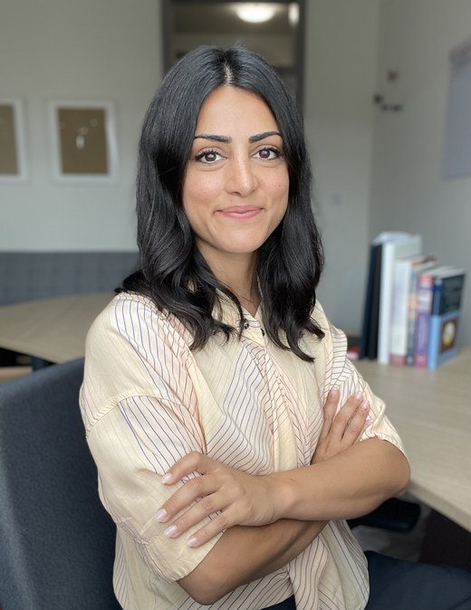

Assistant Professor, Department of Business and Economics, Humboldt Universität zu Berlin

I am an applied microeconomist working at the intersection of migration, labor, and political economy. I study how social categories such as race, migrant status, and minority identity form, gain political salience, and come to shape economic outcomes. Central to my work is treating these categories as endogenous: products of incentives, institutions, and perception rather than fixed traits.
I hold a PhD from the Paris School of Economics and was a Visiting Professor at MIT in 2023–2024. I am a Research Associate at RFBerlin, Co-Head of Department at the Berlin Institute for Empirical Integration and Migration Research (BIM), a Research Fellow at IZA, and a Fellow of the Institut Convergences Migrations.
CV · Google Scholar · IZA · Twitter · Email